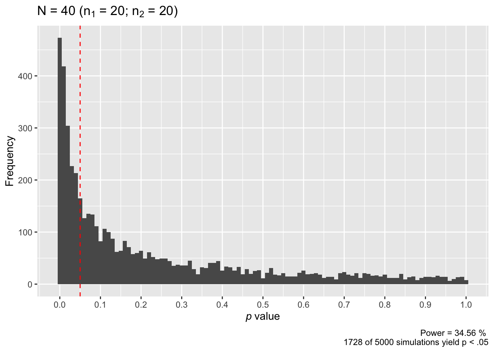
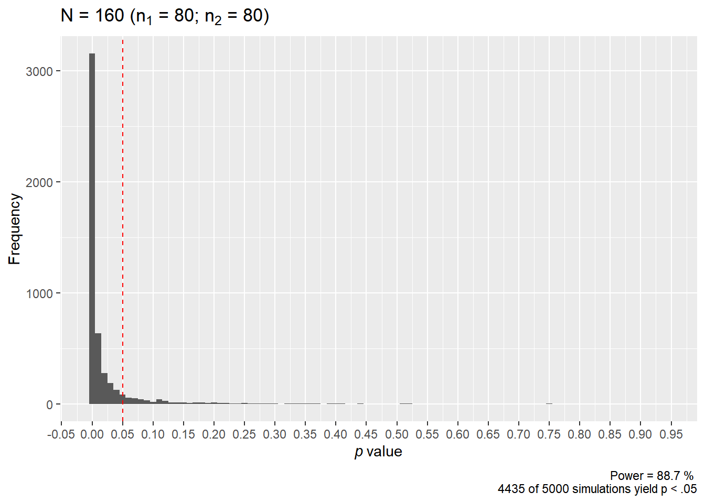
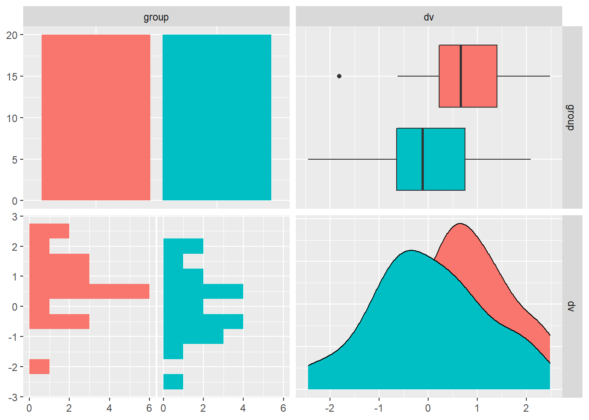
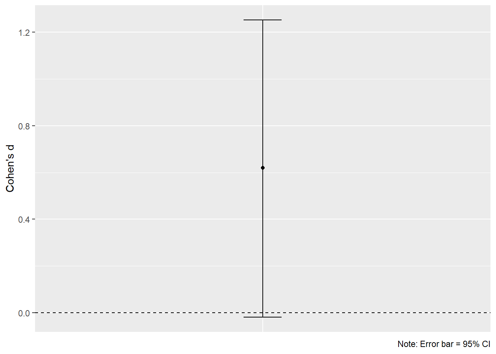

Chapter 1 Introduction to Power Analysis
In this first chapter we will introduce some basic concepts of power analysis. If you are already familiar with these concepts please feel free to move onto the next chapter where we discuss the specifics of how Superpower can used.
1.1 Overview of Power Analysis
The goal of Neyman-Pearson hypothesis testing, often divisively labeled null hypothesis significance testing (NHST), is to determine whether the null hypothesis (\(H_0\)) can be rejected. Statistical power is the probability of rejecting the null hypothesis when it is false. And a power analysis is a sample size planning procedure performed for a future yet-to-be-conducted study that will tell us how many observations are required to reject the null hypothesis with sufficiently high probability.
For example, if you want to plan a study with 80% power, a power analysis will answer the question:
“If I were to repeat my experiment many thousands of times, what sample size will allow me to reject the null hypothesis on 80% of these occasions?”
Let’s illustrate this with an example. Imagine we have conducted a literature review and have estimated that the true standardized mean difference betwen two groups is \(\delta\) = 0.50. That is, the mean of each group differs by 0.50 standard deviations. Assuming that our estimate of this population effect size is accurate, how many observations per group should we collect to reject a null hypothesis of no difference with 80% probability?
Probability is the long-run frequency at which an event occurs (i.e., after many repeated samples). Therefore, we if we want to determine the sample size that allows us to reject the null hypothesis with 80% probability, we can run a simulation of our study at different sample sizes where each study is repeated many thousands of times. Power will be the proportion of these studies, at each sample size, that reject the null hypothesis.
# Define our power analysis simulation function
power_sim <- function(n, d, nsims, seed = TRUE, print_plot = TRUE){
if(seed == TRUE){set.seed(2)}
# For sample size `n`, we want to perform `nsims` number of simulations of our experiment using effect size `d`
replicate(n = nsims, exp = {
x1 = rnorm(n, d, 1)
x2 = rnorm(n, 0, 1)
t.test(x = x1, y = x2, var.equal = TRUE)$p.value}) -> ps
# Power for a given `n` is the long-run probability of rejecting the null hypothesis when it is true. In our simulation, it is the sum of all `nsims` simulations of our study that yield p < .05 divided by the number of `nsims` performed.
power = sum(ps < .05) / nsims
result = cbind(n, power)
# Visualize the results as a plot
ps %>%
as.data.frame() %>%
ggplot(aes(x = .)) +
geom_histogram(binwidth = 0.01) +
scale_x_continuous(breaks = scales::pretty_breaks(n = 15)) +
geom_vline(xintercept = 0.05,
linetype = "dashed",
color = "red") +
xlab(label = expression(italic(p) ~ "value")) +
ylab(label = "Frequency") +
labs(caption = paste(
"Power =",
power * 100,
"% \n",
sum(ps < .05),
"of",
nsims,
"simulations yield p < .05"
)) +
ggtitle(label = expr(paste(
"N = ",!!(n * 2),
" (", n[1], " = ",!!n, "; ", n[2], " = ",!!n, ")"
))) -> pl
# Print our plot
if(print_plot == TRUE){print(pl)}
# Return the result variable
return(result)
}We can use this function to compute power for any given sample size we like. For example, let’s determine the power of detecting \(\delta\) = 0.50 if we were to collect n = 20 observations per group with 5000 simulations.

## n power
## [1,] 20 0.3456In the above plot, the red dashed line marks p = .05. As we can see, the majority of our simulated studies report p values greater than .05. In fact, only 1728 of our 5000 simulated studies rejected the null hypothesis with this sample size. Recall that probability is the long-run frequency at which an event occurs (i.e., after many repeated samples), and power is the probability of rejecting the null hypothesis when it is false. If we divide the 1728 correct rejections by the 5000 total simulations we get a final power estimate for this sample size: 34.56%. That is, after many, many repetitions of our study with a sample size of n = 20 per group, we only reject the null hypothesis 34.56% of the time. If we were planning a study to detect \(\delta\) = 0.50, there is not a high probability that we will reject the null hypothesis with only n = 20 per group. We probably wouldn’t want to use this sample size.
Let’s try n = 50 per group.

## n power
## [1,] 50 0.6954As we can see in the plot of our results, 3477 studies of our 5000 simulated studies rejected the null hypothesis. This corresponds to a power of 69.54%. Is rejecting the null hypothesis around 70% of the time satisfactory for you? It isn’t for most scientists.
Let’s try again with n = 80 per group.

## n power
## [1,] 80 0.887This time 4435 of our simulated 5000 studies rejected the null hypothesis, corresponding to a power of 88.7%. This is usually more than enough power for most scientists to consider satisfactory. We might even consider examining power for lower sample sizes.
And that’s it. That’s all there is to power analysis. Power is simply the probability of rejecting the null hypothesis when it is false. And a power analysis will tell us how many observations are needed to reject this null hypothesis with a sufficiently high probability. Analytic solutions have been determined for many of the common tests you will encounter in psychological science, so simulations like those above are not always necessary. The analytic solution for the t test is implemented by the pwr::pwr.t.test() function as part of the pwr package. In fact, if we input the parameters for our last power analysis into pwr::pwr.t.test(), we will obtain almost identical power estimates for n = 80 per group:
##
## Two-sample t test power calculation
##
## n = 80
## d = 0.5
## sig.level = 0.05
## power = 0.8816025
## alternative = two.sided
##
## NOTE: n is number in *each* groupFor n = 80 per group our simulation reported power = 88.7%, and the analytic solution reported power = 88.2%. If we were to increase the number of simulations we performed (perhaps to many hundreds of thousands), these two results would converge even closer.
Power analysis is essential before embarking on any research study. As we will discuss in subsequent section, with high power you are more likely to obtain findings that are trustworthy and you are more likely to draw correct inferences from your results. This is important, not only for getting your findings published, but also for building a reliable literature that is built on cumulative knowledge.
1.2 Error and Power
In this Neyman-Pearson framework there are two kinds of errors that we must account for when desiging an experimental study. These are:
Type I Error: rejecting the null hypothesis when it is true (also known as false positives or \(\alpha\)).
Type II Error: failing to reject the null hypothesis when it is true (also known as false negatives or \(\beta\)).
Recall that power is the probability of rejecting the null hypothesis when it is false. This corresponds to \(1-\beta\). Power will depend crucially on sample size, effect size, and the Type I error rates that you are willing to accept.
The typical power analysis parameters in psychology are as follows:
\(\beta = .20\)
- This means we are willing to make a Type II error 20% of the time (i.e., 80% power).
\(\alpha = .05\)
- This means we are willing to make a Type I error only 5% of the time (i.e., significance < .05.
\(1-\beta = .80\):
- This means we want to be able to correctly reject the null hypothesis, with a effect size at least as large as hypothesized, when it is false at least 80% of the time.
The values of each of these parameters reflect our relative concerns regarding the cost of Type I and Type II errors. That is, we regard Type I errors as four times more serious than making a Type II error:
\[\frac{\beta}{\alpha} = \frac{.20}{.05} = 4\] This may not always be the case and we may want to design a study where the errors are balanced:
\[\frac{\beta}{\alpha} = \frac{.05}{.05} = 1\]
And other times we may be willing to increase our Type I error rate slightly in order to reduce the Type II error rate. For example, we may raise our Type I error rate slightly in order to reduce the ratio of errors.
\[\frac{\beta}{\alpha} = \frac{.15}{.075} = 2\]
1.3 Effect size
For any given \(\alpha\) level, the power of a test will increase as the effect size increases. An effect size is a measure of the magnitude of some phenomenon. This might include a measure of the difference between two groups (e.g., the mean), the strength of association between variables (e.g., r: the Pearson’s correlation coefficient), or the linear relationship between a dependent variable and one or more predictors (e.g., b: the unstandardized regression coefficient).
A very common way to quantify effect size in psychological science is Cohen’s d. This quantity represents the standardized difference between two means. It is computed as:
\[d = \frac{M_1-M_2}{SD_{pool}}\]
Where \(M_1\) is the mean of group one, \(M_2\) is the mean of group two, and \(SD_{pool}\) is the pooled standard deviation of group one and two. Cohen’s d is sometimes given descriptive labels of small, moderate, and large that correspond to 0.2, 0.5, and 0.8, respectively. However, these descriptives can differ across different measurements. We would strongly advocate against using these “default” interpretation scales and instead understand your phenomena/measurements well enough to understand when an effect is meaningful (Caldwell and Vigotsky 2020). Some additional common effect sizes alongside their descriptive magnitudes are given in the following table:
| Effect | Small | Moderate | Large |
|---|---|---|---|
| d | 0.20 | 0.50 | 0.80 |
| r | 0.10 | 0.24 | 0.37 |
| f | 0.10 | 0.25 | 0.40 |
| \(\eta^2\) | 0.01 | 0.06 | 0.14 |
1.4 Sample effect size vs. population effect size
When we run a study what we are doing is collecting a sample of the total population. It follows that any effect sizes computed on the sample data are an estimate of the true population effect size. This is an important consideration to keep in mind when performing power analyses. As Albers and Lakens (2018) demonstrate, researchers are very likely to miss out on interesting effects when studies are powered to detect previously observed effect sizes.
To make this clear, imagine two groups with a known population standardized mean difference of \(Cohen's \ \delta = 0.5\). (We use the Greek symbol \(\delta\) to refer to the population effect size, and the lower case \(d\) to refer to the sample effect size). Now imagine that we have take a random sample of 20 measurements from each of these groups. We can simulate this in R using rnorm():
# Set random seed for reproducibility
set.seed(2)
# Simulate datasets with mean difference of 0.5
group_1 = rnorm(n = 20, mean = 0.5, sd = 1)
group_2 = rnorm(n = 20, mean = 0, sd = 1)
# Visualize the data
data.frame(group_1, group_2) %>%
tidyr::pivot_longer(
names_to = "group",
values_to = "dv",
cols = everything()) %>%
GGally::ggpairs(ggplot2::aes(colour = group),
lower = list(combo = wrap(ggally_facethist,
binwidth = 0.5)))
The above plot visualizes Group 1 (red) and Group 2 (teal) from left to right as: (1) counts, (2) box plots, (3) rotated histograms, and (4) density distributions. We can see clearly that the mean of Group 1 is greater than Group 2.
Now let’s compute the sample Cohen’s d using the formula we described earlier. We will also compute a 95% CI on Cohen’s d using the exact method implemented by MBESS::ci.smd(). The 95% CI will give us all plausible values of Cohen’s \(\delta\):
# Determine N for each group
n1 = length(group_1)
n2 = length(group_2)
# Determine standard deviation for each group
sd1 = sd(group_1)
sd2 = sd(group_2)
# Compute pooled standard deviation
sd_pool = sqrt((sd1 * sd1 * (n1 - 1) + sd2 * sd2 * (n2 - 1)) / (n1 + n2 - 2))
# Determine the difference between the means
m_diff = mean(group_1) - mean(group_2)
# Compute Cohen's d
d = m_diff / sd_pool
# Compute 95% CI on Cohen's d
(d_ci = MBESS::ci.smd(smd = d, n.1 = n1, n.2 = n2, conf.level = 0.95))## $Lower.Conf.Limit.smd
## [1] -0.01853137
##
## $smd
## [1] 0.6205506
##
## $Upper.Conf.Limit.smd
## [1] 1.251871Recall that another name for Cohen’s d is the standardized mean difference (here, smd). Cohen’s d on our data is 0.62, and the 95% CI ranges from -0.02 to 1.25. Let’s visualize this as a plot (because we love plots):
# Plot the result
d_ci %>%
as.data.frame() %>%
ggplot(aes(x = "Cohen's d")) +
geom_point(aes(y = smd)) +
geom_errorbar(aes(ymin = Lower.Conf.Limit.smd,
ymax = Upper.Conf.Limit.smd), width = 0.1) +
geom_hline(yintercept = 0, linetype = "dashed") +
theme(axis.title.x = element_blank(),
axis.text.x = element_blank(),
axis.ticks.x = element_blank()) +
ylab(label = "Cohen's d") +
labs(caption = "Note: Error bar = 95% CI")
So what do these results tell us? Although we know with certainty that the population effect size is a Cohen’s \(\delta\) of 0.5, our sample effect size is d = 0.62. Furthermore, the wide confidence interval on d means that our sample effect size has considerable uncertainty. All values in the confidence interval can be considered plausible values for the true population effect size. Indeed, in this unusual situation where we know the population effect size with certainty, we can see that the confidence interval on the sample effect size actually captures the true value (this will not always be the case).
The important take-home message for power analysis is that we want to use population effect size and not the sample effect size as our effect size input. When we identify sample effect sizes in the literature (which may be through individual studies, meta-analysis, or when appropriate, through internal pilot studies) we must be mindful that the sample effect size may not be equal to the true population effect size. If we were to use the sample effect size in the above example (d = 0.62) as our estimate of the population effect size in a power analysis, this would have resulted in much less power than we desired. The sample effect size has overestimated the true population effect size. Uncertainty in the population effect size is captured by the 95% CI on the sample effect size. It is wise to take this into consideration when using previously reported effect sizes for a power analysis.
1.5 Safeguard Effect Size
Our estimate of the population effect size is an educated guess based on the best information available to us (much like the written hypotheses we have for a study). It’s accuracy can have critical implications for the sample size required to attain a certain level of power. For this reason, researchers should routinely consider varying their effect size estimate and assessing the impact this has on their power analysis. If we are using sample effect sizes reported in the literature to estimate the population effect size, one excellent recommendation is to formally consider the uncertainty of sample effect sizes. That is, take into account the 95% CI on these reported effects.
Consider once again the data reported in the previous section. If you skipped ahead, we simulated a study where the true population effect size was Cohen’s \(\delta\) = 0.5. However, we obtained a sample estimate of this effect size as Cohen’s d = 0.62 in a sample of N = 40 observations. Were we to use d = 0.62 as our power analysis input, this would result in much less power than anticipated to detect an effect size of \(\delta\) = 0.5. So what should we do?
Perugini, Gallucci, and Costantini (2014) suggest we take into account the uncertainty of the sample effect size. To do so, they suggest for the researcher to compute the lower absolute limit of a 60% CI on the sample effect. This value would then be used as a safeguard effect size and inputted into a power analysis. Why 60%? Well, the lower limit of a 60% CI corresponds to a one-sided 80% CI. As Perugini, Gallucci, and Costantini (2014) describe, this implies a 20% risk that that the true population effect size is lower than this limit, and correspondingly, 80% assurance that the population effect size is equal to or greater than this limit. We focus on the lower boundary because of the asymmetry of overestimating compared to underestimating the population effect size in a power analysis.
Let’s do this for our previous sample estimate of Cohen’s d. We can compute a 60% CI by changing the conf.level parameter to 0.60 in MBESS::ci.smd():
## $Lower.Conf.Limit.smd
## [1] 0.3437032
##
## $smd
## [1] 0.6205506
##
## $Upper.Conf.Limit.smd
## [1] 0.8892221Using our sample Cohen’s d = 0.62 in a sample of N = 40, the lower absolute limit of a 60% CI on this effect is 0.34. We would therefore use the safeguard sample effect size as our best estimate of the population effect size in our power analysis. While we have somewhat underestimated the population effect size in this scenario, we have also ensured we have sufficient power to detect the population effect size. Sufficient power means we are more likely to draw correct inferences from our data.
1.6 Post hoc power analysis
All authors of this book are in agreement: post hoc power analysis is useless. Many statisticians have made this abundantly clear (Gelman 2019; Althouse 2021).
Sometimes editors or reviewers of manuscripts will insist that an author perform a post-experiment power calculation in order to interpret non-significant findings. These post hoc or observed power calculations are requested on the basis of explaining the observed data rather than planning some future experiment. These analyses are intended to answer the question: “On the basis of my observed effect size, did I have enough power to reject my null hypothesis?”. To avoid needless suspense, the answer is always: no.
We will discuss two reasons why post hoc power analyses are a problematic practice.
1.6.1 The sample effect size is not the population effect size
As discussed at length in previous sections, the sample effect size is not the population effect size. For this simple reason alone, any post hoc power calculation will be an inaccurate estimate of the true power of an experiment. To illustrate, consider once more our simulated data set. If you skipped ahead, we simulated random sample of N = 40 from two populations (\(n_1\) = 20, \(n_2\) = 20) where the true population effect size was Cohen’s \(\delta\) = 0.5. However, based on random sampling alone, we obtained a sample effect size of Cohen’s d = 0.62.
If we perform a t-test on these data, we will find that the data are compatible with the null hypothesis of no difference. That is, p > .05. This is exactly the kind of scenario targeted by proponents of post hoc power analysis. Let’s perform the test:
##
## Two Sample t-test
##
## data: group_1 and group_2
## t = 1.9624, df = 38, p-value = 0.05707
## alternative hypothesis: true difference in means is not equal to 0
## 95 percent confidence interval:
## -0.02199628 1.41348186
## sample estimates:
## mean of x mean of y
## 0.6954610335 -0.0002817572We obtain p = .057. Now let’s compute a post hoc power calculation on the sample effect size. As will be explained in later sections, we can compute different kinds of power analyses by omitting a single parameter in a power function. Here, we omit power and ask pwr::pwr.t.test() to estimate power on the basis of n = 20 per group (total N = 40) using d = 0.62 and \(\alpha\) = .05 (two-sided):
## [1] 0.6205506# Perform the post hoc power analysis by excluding `power`. Note: `n` refers to sample size 'per group':
pwr::pwr.t.test(n = 20, d = d, sig.level = 0.05)##
## Two-sample t test power calculation
##
## n = 20
## d = 0.6205506
## sig.level = 0.05
## power = 0.4811947
## alternative = two.sided
##
## NOTE: n is number in *each* groupOur estimate of post hoc power is 48%. However, we know that the true population effect size is \(\delta\) = 0.5. With this knowledge, we can compute the true power of our test as:
# Define delta
delta = 0.5
# Perform the post hoc power analysis by excluding `power`:
pwr::pwr.t.test(n = 20, d = delta, sig.level = 0.05)##
## Two-sample t test power calculation
##
## n = 20
## d = 0.5
## sig.level = 0.05
## power = 0.337939
## alternative = two.sided
##
## NOTE: n is number in *each* groupThe true power based on the population effect size is 34%. This is much lower than our post hoc power analysis has lead us to believe. As such, post hoc power analysis will not tell you whether you had enough power to reject the null hypothesis. That is, unless you are willing to assume your sample effect size is the population effect size. This is something a single study cannot tell you. And this is something that is clearly incorrect in our example.
1.6.2 Post hoc power is merely a transformation of your obtained p value
Post hoc power analyses are simply a re-expression of the obtained p value. As Lenth (2007) describes, to compute post hoc power all we need (beyond our chosen \(\alpha\)) is the p value of the test and associated degrees of freedom. For this reason, post hoc power does not provide more information than that which is already provided by our p value.
Recall from above that our obtained p value in our simulated data is .057. Lenth (2007) provides a simple R function to compute post hoc power from the obtained p value from an independent groups t test as follows:
# Define power function
power <- function(p_val, deg_f, alpha){
delta = qt(p = 1 - p_val / 2, df = deg_f)
crit_val = qt(p = 1 - alpha / 2, df = deg_f)
power = 1 - pt(q = crit_val, df = deg_f, ncp = delta) + pt(-crit_val, deg_f, delta)
return(power)
}Let’s apply this function to our obtained p value and associated degrees of freedom:
## [1] 0.4812096Using only the obtained p value and test degrees of freedom we obtain a post hoc power of 48%. This is identical to our power analysis based on the observed effect size (with error due to rounding of our p value). We could do this with any combination of obtained p value and degrees of freedom, and obtain exactly the result of a post hoc power analysis.
In general, the power of a test yielding exactly p = .05 will be around 50% (and inches ever closer to exactly 50% as degrees of freedom approaches infinity). If p > .05, power (in general) will be less than 50%. To demonstrate, let’s test this with our function using degrees of freedom from five to infinity against p values of .05, .10, and .20:
v = list(seq(20,200,20), Inf)
map_df(v, ~ data.frame(.,
power(p_val = .05, deg_f = ., alpha = .05),
power(p_val = 0.10, deg_f = ., alpha = .05),
power(p_val = 0.20, deg_f = ., alpha = .05))) %>%
`colnames<-`(c("Degrees of Freedom",
"Power ($p$ = .05)",
"Power ($p$ = .10)",
"Power ($p$ = .20)")) %>%
knitr::kable(escape = FALSE) %>%
kableExtra::kable_styling(bootstrap_options = "striped",
full_width = T,
position = "left")| Degrees of Freedom | Power (\(p\) = .05) | Power (\(p\) = .10) | Power (\(p\) = .20) |
|---|---|---|---|
| 20 | 0.5101846 | 0.3754240 | 0.2432919 |
| 40 | 0.5050221 | 0.3759611 | 0.2463210 |
| 60 | 0.5033422 | 0.3761399 | 0.2473313 |
| 80 | 0.5025099 | 0.3762290 | 0.2478362 |
| 100 | 0.5020131 | 0.3762824 | 0.2481391 |
| 120 | 0.5016829 | 0.3763180 | 0.2483409 |
| 140 | 0.5014475 | 0.3763434 | 0.2484851 |
| 160 | 0.5012713 | 0.3763624 | 0.2485932 |
| 180 | 0.5011344 | 0.3763772 | 0.2486773 |
| 200 | 0.5010250 | 0.3763890 | 0.2487446 |
| Inf | 0.5000443 | 0.3764951 | 0.2493496 |
As we can see, whenever a test is non-significant (as it was in our example) the power will usually be less than 50%. Therefore, whenever you are motivated to perform a post hoc power analysis to explain a non-significant result, it is an empty question of whether post hoc power is high. The answer, as we alluded to earlier, is always no. In our simulated dataset we already knew that p > .05, so of course this must mean we had low power. Otherwise we would not have obtained p > .05! Post hoc power is a mere transformation of the p value and provides us with no new information than that we already knew.
Power calculations are useful for designing experiments and planning studies. They are not useful once the data is collected and the final analyses have been completed. Keep this in mind when performing your own power analyses, or attempting to explain non-significant results.
1.7 The Minimal Detectable Effect Size
In an ideal world all studies would proceed with sample sizes that give sufficient power to detect population effects. However, we operate within a world of limited resources, and there are often times where researchers are unable to increase sample sizes to attain a specific power. If an experiment is performed in this context, rather than calculating something like post hoc power, it is much more informative to compute the smallest effect size that could be detected in a study of this particular sample size. This requires fixing the \(\alpha\) level and sample size, and computing the critical test statistic for the proposed (or conducted) statistical analysis.
We will once again draw on the simulated dataset we introduced above. This dataset was generated by drawing a random sample of N = 40 from two populations (\(n_1\) = 20, \(n_2\) = 20) where the true population effect size was Cohen’s \(\delta\) = 0.5. However, the obtained sample effect size was Cohen’s d = 0.62. Furthermore, using an independent groups t-test (\(\alpha\) = .05; two-sided) we found that this effect was non-significant (p = .057). Let’s compute what minimum t value was necessary to attain statistical significance. This is the critical t value, which can be computed with the qt() function in R:
n1 = length(group_1)
n2 = length(group_2)
alpha = .05
deg_f = n1 + n2 - 2
(t_crit = qt(p = 1 - (alpha/2), df = deg_f))## [1] 2.024394The critical t value for our test is 2.024. This means that any obtained t statistic lower than this value will yield a statistically non-significant result (i.e., p > .05). Our t statistic was 1.96, so it is unsurprising that our result was non-significant.
There is an algebraic solution to converting an obtained independent groups t statistic (two sample t-test) to a Cohen’s d value:
\[d = t* \sqrt{\frac{1}{n_1} + \frac{1}{n_2}}\]
Here, t is the obtained t statistic from an independent groups t test, and \(n1\) and \(n2\) are the sample sizes of each group, respectively. We can confirm that d = 0.62 in our data on the basis of the t statistic and sample sizes alone:
# Store the t test result
result = t.test(x = group_1, y = group_2, var.equal = TRUE)
# Extract the t value
(t_val = as.numeric(result$statistic))## [1] 1.962353# Store the sample size of each group
n1 = length(group_1)
n2 = length(group_2)
# Compute Cohen's d from the t statistic and sample sizes alone
t_val * sqrt((1/n1 + 1/n2))## [1] 0.6205506d = 0.62. Magic. We can take advantage of this formula and, instead of inputting the obtained t statistic, we can input the critical t statistic for a study of this size. In doing so, we will obtain a critical d value:
## [1] 2.024394## [1] 0.6401696In a study of this size the critical d value is 0.64. This means that any obtained d statistic lower or equal to this value will yield a non-significant result (i.e., p > .05). As we obtained d = 0.62 as our sample effect size, it is unsurprising that our result is non-significant. The critical d value of 0.64 is the minimal detectable effect size in a study of this size.
What does this all mean? Well, if a researcher believes that the true population effect size is less than 0.62 (perhaps, \(\delta\) = 0.5), they should be un-surprised if they find a non-significant finding in N = 40. The minimum effect size they could have hoped to have detected was d = 0.66. The non-significant result is explained by the fact that a study of this sample size cannot detect effect sizes below the critical d value. In later chapters we will discuss how to use Superpower to address these issues using tools such as the plot_power function and the morey_plot functions.
References
Albers, Casper, and Daniël Lakens. 2018. “When Power Analyses Based on Pilot Data Are Biased: Inaccurate Effect Size Estimators and Follow-up Bias.” Journal of Experimental Social Psychology 74: 187–95. https://doi.org/10.1016/j.jesp.2017.09.004.
Althouse, Andrew D. 2021. “Post Hoc Power: Not Empowering, Just Misleading.” Journal of Surgical Research 259 (March): A3–A6. https://doi.org/10.1016/j.jss.2019.10.049.
Caldwell, Aaron, and Andrew D. Vigotsky. 2020. “A Case Against Default Effect Sizes in Sport and Exercise Science.” PeerJ 8 (November): e10314. https://doi.org/10.7717/peerj.10314.
Gelman, Andrew. 2019. “Don’t Calculate Post-Hoc Power Using Observed Estimate of Effect Size.” Annals of Surgery 269 (1): e9–e10.
Lenth, Russell V. 2007. “Statistical Power Calculations.” Journal of Animal Science 85 (suppl_13): E24–E29.
Perugini, Marco, Marcello Gallucci, and Giulio Costantini. 2014. “Safeguard Power as a Protection Against Imprecise Power Estimates.” Perspectives on Psychological Science 9 (3): 319–32.